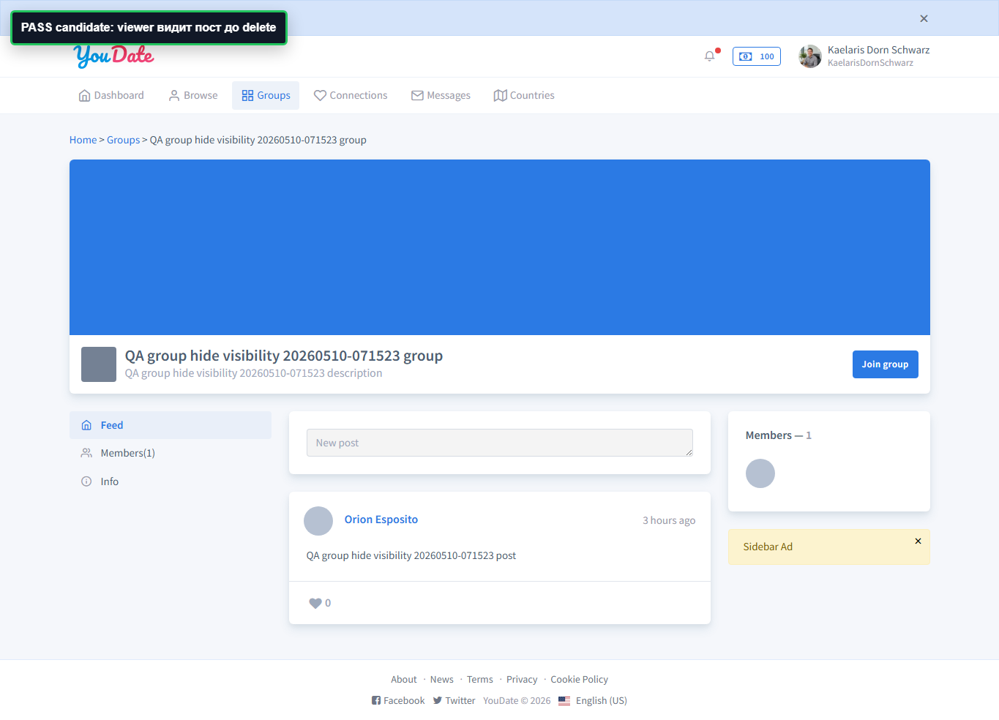
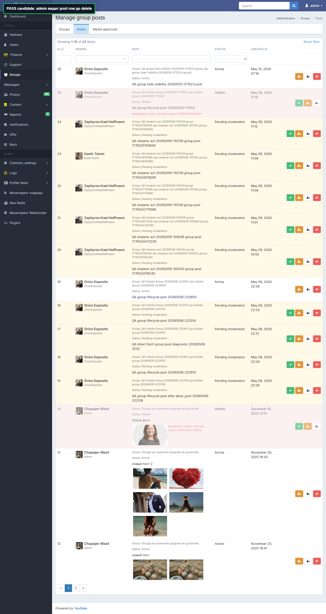
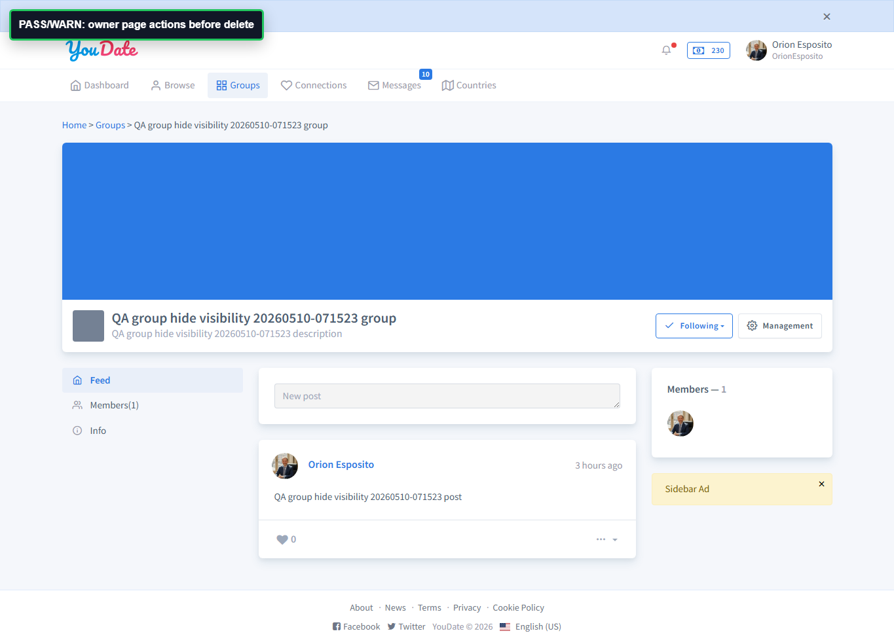
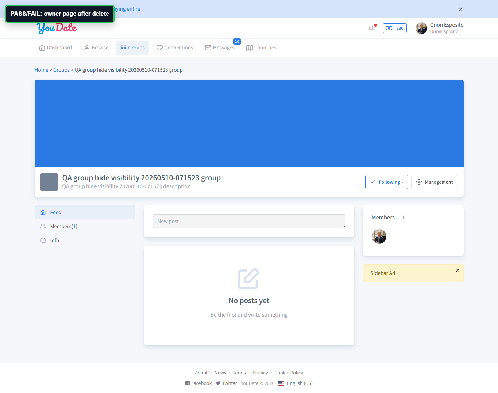
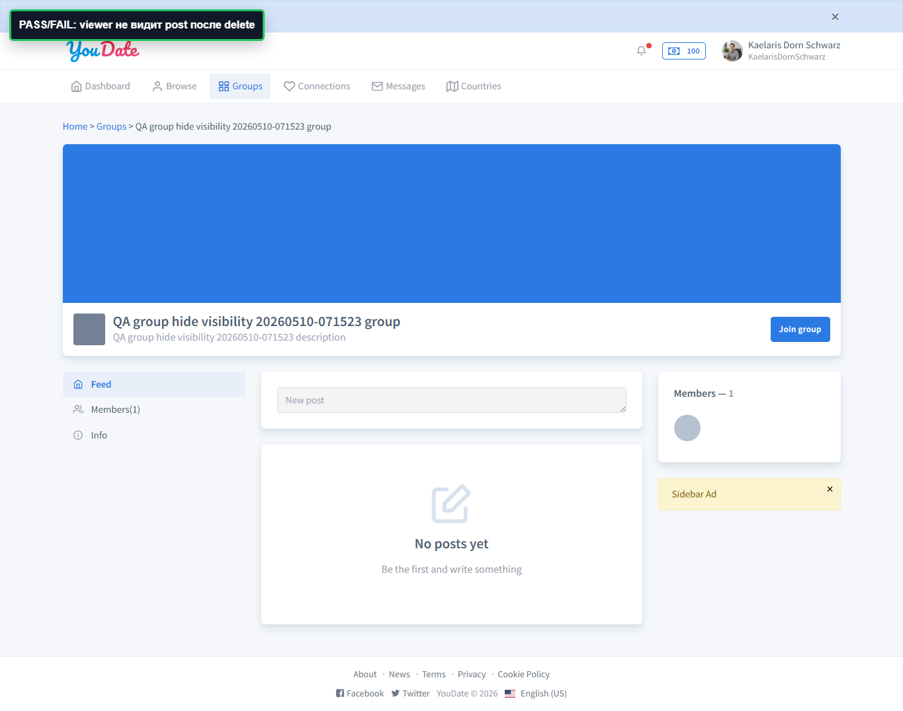
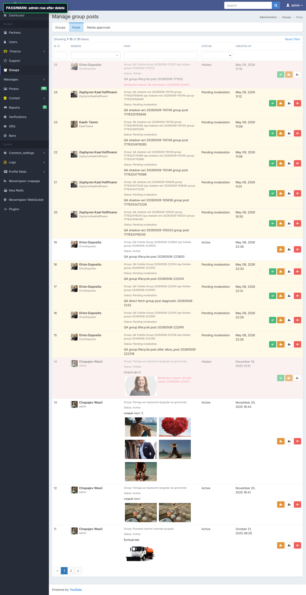

Дата прохода: 2026-05-10. Проверен остаток group posts lifecycle после hide/reopen: owner delete и report post endpoint.
ИтогFAIL
DeletePASS
ReportFAIL
Короткий вывод
Статус
Проверка
Что получили
Вывод
PASS
Delete post
Owner U184 удалил post ID 26 через реальную ссылку `/en/group/delete-post?alias=...&postId=26`; JSON вернул `success=true`.
Удаление собственного поста работает.
PASS
Visibility after delete
После удаления owner и viewer U166 не видят текст поста; admin row также отсутствует.
Delete удаляет пост из пользовательской и админской видимости.
FAIL
Report post
`/en/group/report-post?alias=...&postId=26` на GET и POST возвращает пустой `200` без JSON, flash, формы, записи жалобы или видимого результата.
Report post endpoint фактически не реализован.
Для Игоря
FAIL
GROUP-POST-REPORT-EMPTY-ACTION
Факт: live endpoint `/en/group/report-post?alias=qa-group-hide-visibility-20260510-071523-group&postId=26` отвечает `200`, но тело пустое и результата для пользователя/админки не видно.
Ожидание: report post должен давать понятный результат: форма/CSRF или AJAX, запись жалобы, flash/JSON и дальнейшая обработка в админке.
Где смотреть: `application/controllers/GroupController.php`, метод `actionReportPost($alias)` сейчас пустой в локальной копии.
Ретест: открыть пост другим пользователем, отправить report, проверить ответ, уведомление пользователю и появление записи жалобы/модерации в админке.
PASS
Delete post работает
Факт: owner delete через DOM href с `data-type=post` вернул `success=true`; owner, viewer и admin больше не видят post ID 26.
Примечание: post ID 26 был намеренно удален тестом как часть проверки delete flow.
Evidence screenshots
PASSViewer видит пост до delete

PASSAdmin видит Active row до delete

FAILReport endpoint пустой, delete action найден

PASSOwner не видит пост после delete

PASSViewer не видит пост после delete

PASSAdmin row отсутствует после delete

Матрица Алексея
Квадрант
Наблюдение
Совет
Как проверить готовность
Срочно и важно
Жалоба на пост группы не работает как продуктовая функция: endpoint пустой.
Считать это дефектом group moderation/reporting, если жалобы пользователей на посты входят в acceptance scope.
Пользователь отправляет жалобу, получает понятный результат, а админ видит запись жалобы и может модерировать пост.
Важно, но не срочно
Delete работает, но удаляет пост из admin list без отдельной истории.
Если важна история модерации, решить продуктово: пользовательское delete должно физически удалять или оставлять audit trail.
После delete в админке есть история действия или это явно описано как физическое удаление.